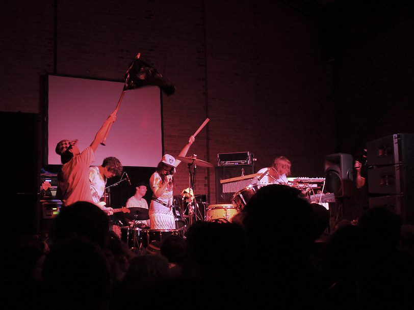

Gang Gang Dance: One of NYC’s finest (and artiest)



Indie/electronic band and art collective Gang Gang Dance, consisting of Lizzie Bougatsos, Brian Degraw, Tim Dewit and Josh Diamond, can definitely lay claim to being an integral part of the of the New York creative network. They’ve toured with everyone from Sonic Youth to Animal Collective to TV On The Radio, and they’ve had nearly just as much a presence in their city’s art community, participating recently in the biennial of the Whitney Museum of Contemporary Art. It’s more than just super-trendy hype, though. Last year the group released their long-overdue new album Saint Dymphna, and it’s their best and most fully realised work to date.
According to the ITM review, “the eleven tracks collected here so frequently cross boundaries and genres so smoothly and rapidly… that I’m frequently at a loss trying to encapsulate what they ‘do’, per se… Believe the considerable hype that has been swirling around of late – Saint Dymphna is well worth investigating.” To find out more, ITM’s Angus Paterson talks to Liz Bougatsos from Gang Gang Dance.
Hi guys, this is Angus from inthemix in Australia. First up, congrats on getting your new album out there. There seems tobe a consensus out there that it’s your best album to date. How are you feeling about it now that it’s completed?
I don’t distinguish my albums from each other. They’re all the same puppy…. I do suppose getting positive responses from a wider audience is quite invigorating though.
It definitely represents a very polished and refined realization on your sound, was it something that you labored on to get it right?
Hmmm… it wasn’t planned. We don’t say OK, “We’re going to make a new age album now with a afro punk twist?” We like to go into recording and live shows with an open mind and bring our influences in… I can say though that BDG is a DJ, and we did plan to have him use some of those skills in the sequencing of the album… I think it helped with the more “accessible” quality… whatever that means.
I understand that it was a bit of an epic journey to get it finished, and that it ended up taking you a lot longer than expected. What was going on with the recording?
Well we kept getting interrupted from touring in-between recordings. So we’d come home and scrap what we worked on before. This happened like 4 or 5 times… So we got a lot of “extra” albums there. But to be honest, we were never satisfied until Saint Dymphna. The band had some internal troubles too. We almost broke up. So thankfully, that didn’t happen. I honestly don’t think it ever could.
How close is the end product to what you were trying to create when you began?
We don’t try to create anything consciously… like I said, it’s an open mind thing. But with the DJ sequencing and some of the songs…they did sound as I thought they would. Vaccuum, and First Communion. Housejam had some surprises that was in the song writing. I basically applied another song called Eye of Dogs that we’ve been touring and playing for years as the lyrics of Housejam in the studio.
I’ve never seen Gang Gang Dance perform live, but just listening to your music, there’s a real strong visual element that comes across. It’s easy to imagine it converting well to the live stage. Is it a matter of you trying to capture your live energy on record, or is it generally the other way around? What comes first?
That’s funny you say that. Because that was the goal at first… to capture our live sound in recording… but eventually we just tried to make a product that we were satisfied with on all levels. Making everybody happy can be quite a task at times! I think we treat our albums and live shows the same. They start and finish no breaks. Like a film. They they’re own thing and we put alot of effort into both. They’re both our babies.
So what’s your live show looking like at the moment?
Cinematic. Raw. Spirited. Quite blissful.
Looking at some of the acts that you guys have toured with over the years, there’s names like Sonic Youth and TV On The Radio and so on, and you’re promoted as being really part of the New York creative network. This is a really romantic idea to people from another country, to imagine the music scene in such an iconic city. How defining is this for what you guys do, do you think?
Well shit I do respect the peeps that keep with it and do what they do for all these years. Sonic Youth and TV On The Radio... They deserve their respect. TV On The Radio…we feel a little more tight with age-wise… Some of the members worked with Josh Diamond, our guitarist, for many years at a bar. And Kyp served us coffee. I dunno. We have a long history. And it’s beautiful. I wouldn’t change a thing about my past in NYC. Then again, I ain’t goin anywhere. I personally get good advice from Kim Gordon. She should start a love advice column for girls in bands. She’s helped me a lot. The nostaglia is pretty great. I mean, Patti Smith... Jazz musicians… actors… fashion designers… we all come together. We one here.
You guys obviously have really strong ties with the art community, and for a lot of acts out there that really resist being branded as ‘art rock’ or anything like that. Am I correct in saying that you’re a lot more happy to embrace that, at the risk of what you’re doing going over some people’s heads I guess?
I like to embrace all walks of life. I mean I’ve been working as a visual artist, and so has BDG for many years here in NYC. I’ve gained a lot of friends there and when they ask me to do things…they feel close to home and I want to share that with my band.
One of the really big projects you guys have been involved with recently in the biennial of the Whitney Museum of Contemporary Art. That sounds just stunning, and it’d be a defining moment for any artist or musician I’m sure. Tell me a bit bout it.
We had a mirror so when the audience came in they saw themselves. Noone knew we were playing behind the mirror. It was riveting in that way because the audience saw themselves, forced to look in the mirror. Eventually we were revealed, but I felt like we were making a cult film in the back or something, like a Sun City Girls film. We made all the props and organized it as if we were making a film. I’ll never forget when Brian said to me…”can you do something about this,” he hated the way it looked back there. We did make a film. I wouldn’t have changed that moment, as a visual artist, for the world.
Finally, any plans to tour Australia coming up?
Yeah man. Watch out!
Gang Gang Dance’s Saint Dymphna is out now through Warp/Inertia.